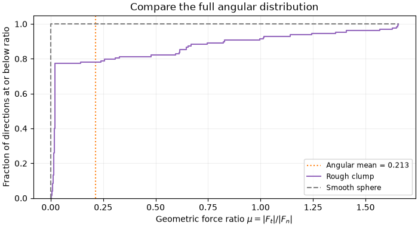
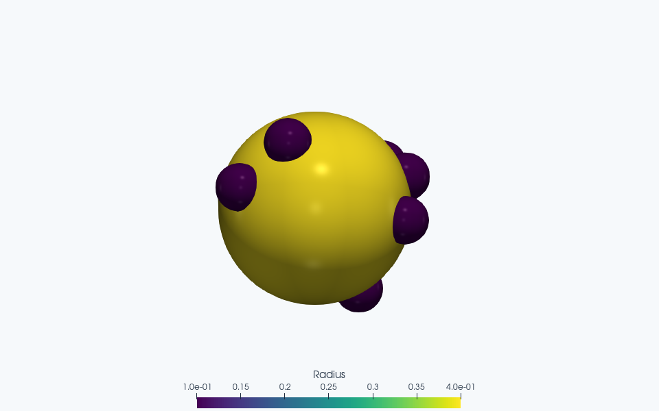

Note
Go to the end to download the full example code.
Particle-level friction coefficient of a rigid clump#
Same setup as the SASA example, but the quantity of interest is the
probe-reported friction coefficient mu = |F_t| / |F_n| instead of
the surface area. We take the mean of mu over the sampled approach
directions. The directions form a near-uniform Fibonacci lattice
on S^2, so the mean is an average over approach solid angle. Equal
solid angles generally cover unequal surface areas on a nonspherical body;
this is not an area-weighted surface average. The measured force ratio is
shape-induced geometric friction, not a material Coulomb coefficient.
The small geometry and probe grids keep this demonstration quick. Increase them separately to check geometric quadrature and directional convergence.
Sphere-ray intersections locate the first contact from outside.
Numerics match sasa_calculation.py: x64 resolves the small
target_overlap = 1e-10 at the body’s length scale.
separation_tolerance = 1e-12 is a compatibility parameter, not an
iteration tolerance.
Enable x64 before any other JAX work.
import jax
jax.config.update("jax_enable_x64", True) # type: ignore[no-untyped-call]
import numpy as np
import matplotlib.pyplot as plt
from jaxdem.utils.particle_creation import create_ga_state, create_sphere_state
from jaxdem.utils.surface_properties import compute_surface_properties
Central rigid clump + tracer sphere
central = create_ga_state(
N=1,
nv=8,
dim=3,
particle_radius=0.5,
asperity_radius=0.1,
particle_type="clump",
core_type="solid", # fill the central void so each approach ray meets the body
n_samples=512, # modest 3D surface-quadrature budget for a quick demonstration
seed=0,
mesh_kwargs={"steps": 50},
)
tracer_radius = 0.05
tracer = create_sphere_state(radii=tracer_radius, dim=3)
Probe the surface#
At contact, resolve the net probe force along the center-to-center approach axis \(\hat{\mathbf{d}}\):
Each constituent sphere contact is normal to its own contact surface, but the sum need not point along the two bodies’ COM axis. Roughness therefore produces a tangential resultant without adding a microscopic Coulomb law. On a smooth central sphere the force is radial and this geometric ratio is zero. A vanishing normal resultant makes the ratio singular, so the finite-value check also guards the selected probe setup.
n_points = 128
result = compute_surface_properties(
central,
tracer,
target_overlap=1e-10,
separation_tolerance=1e-12,
n_points=n_points,
n_orientations=1,
n_rolls=1,
)
mu = np.asarray(result["mu"]).reshape(n_points)
assert np.all(np.isfinite(mu))
print(f"mu: min={mu.min():.4f} max={mu.max():.4f}")
mu: min=0.0019 max=1.6554
Mean friction across the sampled approach directions. The Fibonacci lattice approximates the isotropic incident-direction mean
An area-weighted mean would instead be \(\overline{\mu}_A=\int\mu\,dA/\int dA\). For a radial surface, \(dA/d\Omega=\rho^2\sqrt{1+|\nabla_{S^2}\log\rho|^2}\), so it needs geometric weights absent from the simple arithmetic mean. Choose the averaging measure according to the experiment being represented: an isotropic set of approach directions and uniformly sampled surface area answer different physical questions.
mean_friction = float(mu.mean())
print(f"mean friction = {mean_friction:.4f}")
# A smooth sphere provides a useful baseline: radial normal forces give mu=0.
smooth = create_sphere_state(radii=0.5, dim=3)
baseline = compute_surface_properties(
smooth,
tracer,
target_overlap=1e-10,
separation_tolerance=1e-12,
n_points=n_points,
n_orientations=1,
n_rolls=1,
)
np.testing.assert_allclose(np.asarray(baseline["mu"]), 0.0, atol=1e-8)
print("Smooth-sphere baseline: mu = 0 within numerical tolerance.")
mean friction = 0.2128
Smooth-sphere baseline: mu = 0 within numerical tolerance.
Examine the distribution behind the mean#
Each approach direction has equal weight. The cumulative curve reveals the fraction below any chosen ratio without a bin-width choice. Its difference from the zero-ratio smooth reference comes entirely from shape, since the contact law itself has no tangential friction.
sorted_mu = np.sort(mu)
fractions = np.arange(1, n_points + 1) / n_points
fig, ax = plt.subplots(figsize=(7, 3.8), layout="constrained")
ax.axvline(
mean_friction,
color="tab:orange",
linestyle=":",
label=f"Angular mean = {mean_friction:.3f}",
)
ax.step(
np.r_[0.0, sorted_mu],
np.r_[0.0, fractions],
where="post",
color="tab:purple",
label="Rough clump",
)
ax.plot(
[0.0, 0.0, sorted_mu[-1]], [0.0, 1.0, 1.0], "--", color="0.5", label="Smooth sphere"
)
ax.set(
ylabel="Fraction of directions at or below ratio",
ylim=(0.0, 1.05),
title="Compare the full angular distribution",
)
ax.legend(fontsize="small")
ax.set_xlabel(r"Geometric force ratio $\mu=|F_t|/|F_n|$")
ax.grid(alpha=0.2)
plt.show()


ParaView rendering of this run’s VTKWriter output.
Total running time of the script: (0 minutes 12.329 seconds)